Unity采用的布局引擎是开源引擎项目Yoga，它是一个高性能的实现flexbox布局的引擎
一、关于flexbox布局
全称Flexible Box布局模型，也叫弹性盒子布局模型。它是一种弹性一维布局。
为什么说是弹性？
它能够使父元素在子元素的大小未知或动态变化情况下仍然能够分配好子元素之间的间隙。主要思想是使父元素能够调整子元素的宽度、高度、排列方式，从而更好的适应可用的布局空间。设定为flex布局的> 元素能够放大或者收缩子元素使之尽可能填充可用空间。
为什么说是一维？
因为一个flexbox一次只能处理一个维度上的元素布局，一行或者一列。
1. 基本概念
flexbox有三个基本的概念：容器、项目和轴
容器是指采用Flex布局的元素，项目则是容器的子元素。
对于容器来说，存在两个轴：水平轴（main axis，也叫主轴）和垂直轴（cross axis，也叫交叉轴），flexbox只能按照其中一个轴进行布局，所以说是一维布局。
这是关于基本概念的示意图：
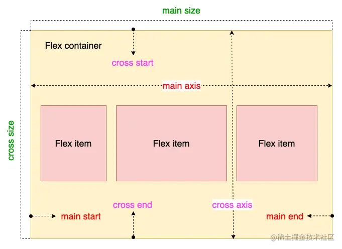
2. 容器属性
一个元素要作为容器使用flex布局，首先需要css指定布局样式：
1 | .container { |
flex容器的属性有以下6个： - flex-direction - flex-wrap - flex-flow - justify-content - align-items - align-content
2.1 flex-direction
指定排列方式
1 | .container { |
（1）flex-direction: row：默认值，沿水平轴从左到右排列，起点在左沿
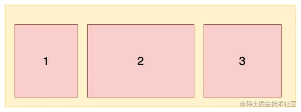
（2）flex-direction: row-reverse：沿水平轴从右到左排列，起点在右沿
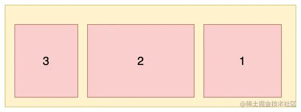
（3）flex-direction: column：沿垂直轴从上到下排列，起点在上沿

（4）flex-direction: column-reverse：沿垂直轴从下到上排列，起点在下沿
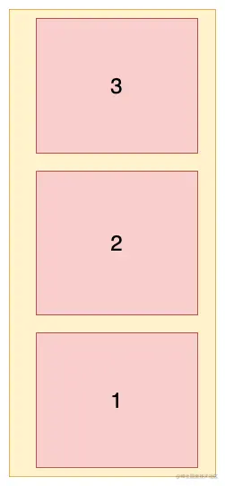
2.2 flex-wrap
容器内元素是否可以换行
1 | .container { |
（1）flex-wrap: nowrap：默认值，不换行。当主轴的长度是固定并且空间不足时，项目尺寸会随之进行调整，而不会换行。
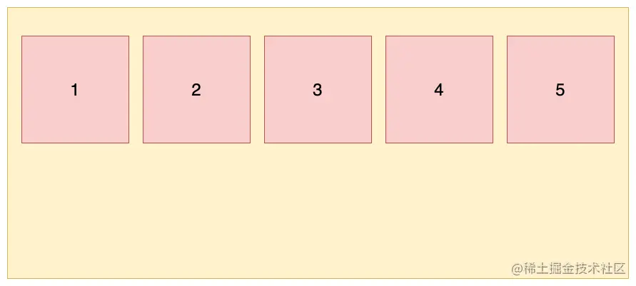
（2）flex-wrap: wrap：换行，第一行在上面
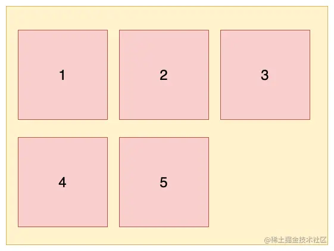
（3）flex-wrap: wrap-reverse：换行，第一行在下面
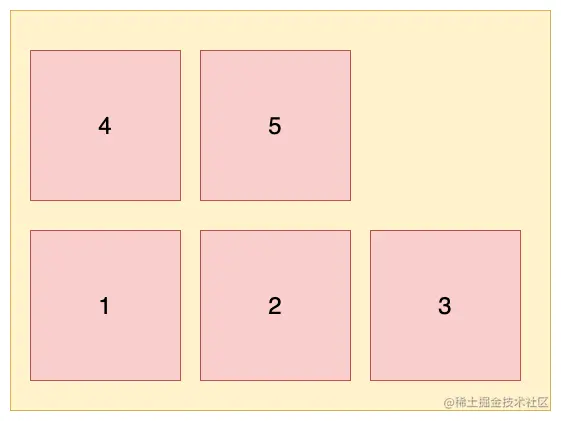
2.3 flex-flow
是flex-direction和flex-wrap的简写，尽量不用
1 | .container { |
2.4 justify-content
元素在主轴的对齐方式，这里以水平轴为例（flex-direction: row）
1 | .container { |
（1）justify-content: flex-start：默认值，元素在主轴上左对齐（上对齐）
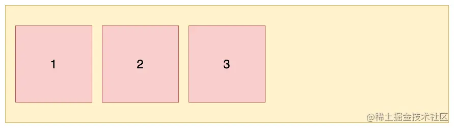
（2）justify-content: flex-end：元素在主轴上右对齐（下对齐）
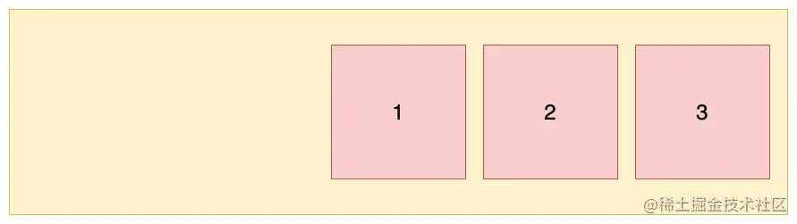
（3）justify-content: center：元素在主轴上居中对齐
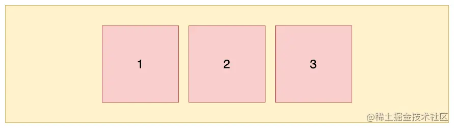
（4）justify-content: space-between：元素在主轴上两端对齐，元素之间间隔相等
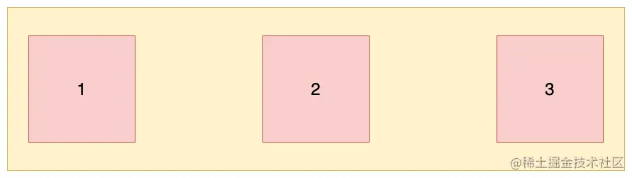
（5）justify-content: space-around：每个项目两侧的间隔相等
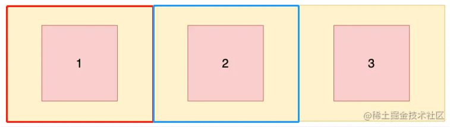
2.5 align-items
元素在交叉轴上的对齐方式，这里以水平轴为例（flex-direction: row）
1 | .container { |
（1）align-item: flex-start：交叉轴的起点对齐（上面或左边）。设置容器高度为 100px，项目高度分别为 20px、40px、60px、80px、100px，效果如图所示：
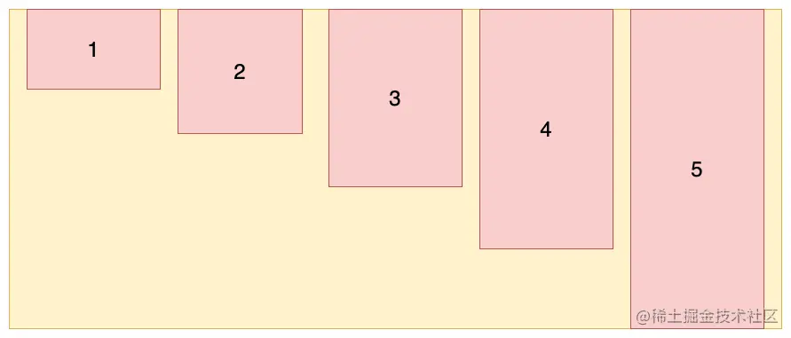
（2）align-item: flex-end：交叉轴的终点对齐（下面或右边）。设置容器高度为 100px，项目高度分别为 20px、40px、60px、80px、100px，效果如图所示：
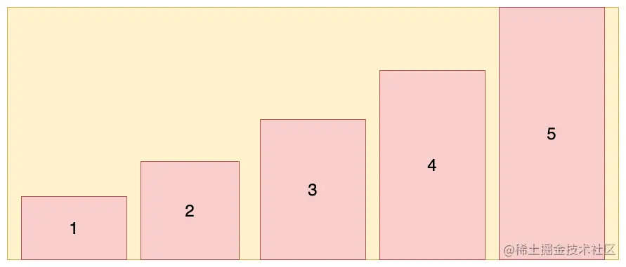
（3）align-item: center：交叉轴的中点对齐。设置容器高度为 100px，项目高度分别为 20px、40px、60px、80px、100px，效果如图所示：
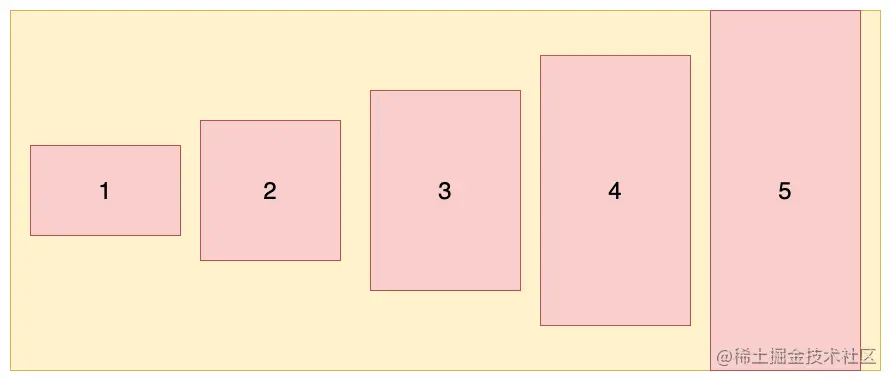
（4）align-item: stretch：默认值、如果元素未设置高度或设为auto，将占满整个容器的高度。假设容器高度设置为 100px，而项目没有设置高度，则项目的高度也为 100px：
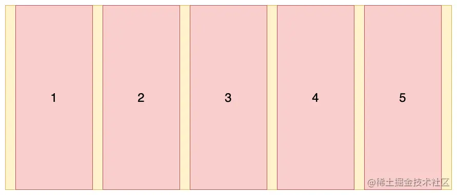
（5）align-item: baseline：以第一个元素的基线对齐
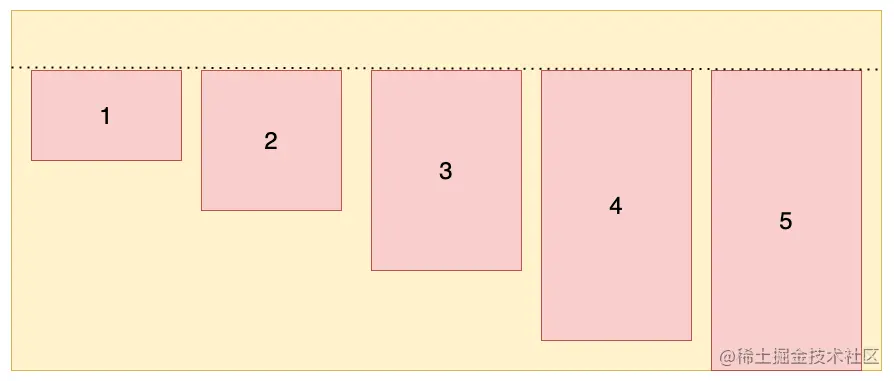
2.6 align-content
多根轴线对齐方式（多根轴线是指由于换行或者布局变化，出现了多个主轴），当只有一根主轴，该属性不生效。这里以水平轴且换行为例（flex-direction: row; flex-wrap: wrap;）
1 | .container { |
（1）align-content: stretch：默认值，轴线占满整个交叉轴。这里我们先设置每个项目都是固定宽度，效果如下：
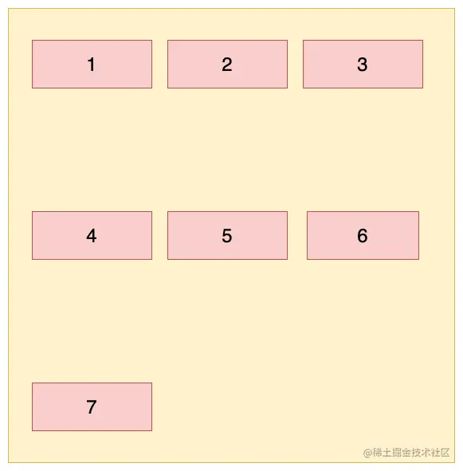
去掉每个项目的高度，它会占满整个交叉轴，效果如下：
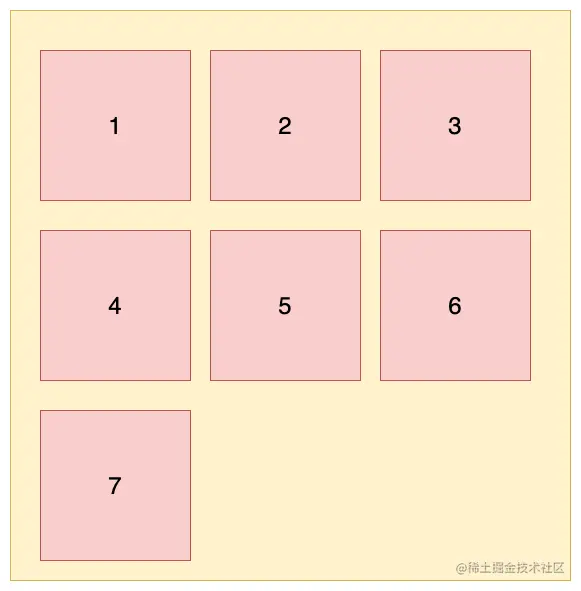
（2）align-content: flex-start：从交叉轴开始位置进行对齐
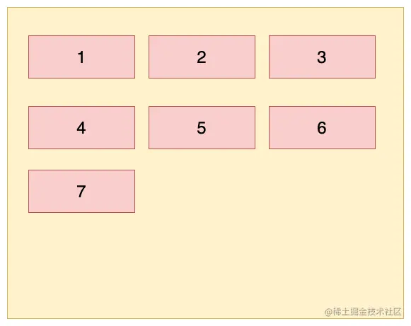
（3）align-content: flex-end：从交叉轴结尾位置进行对齐
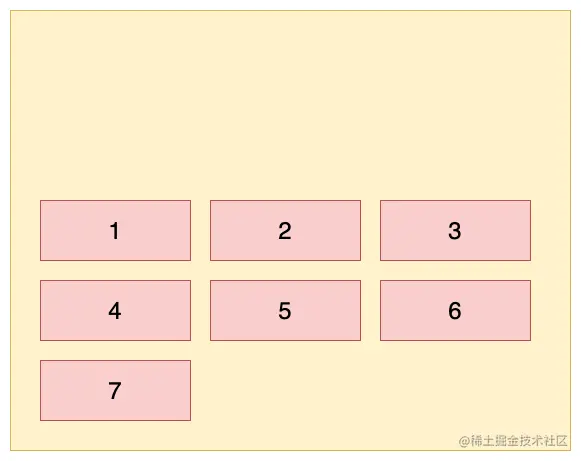
（4）align-content: center：与交叉轴中点对齐
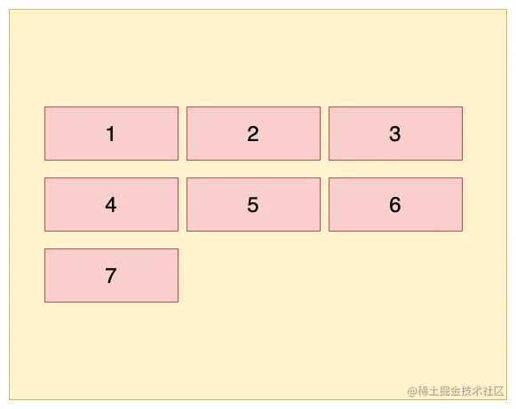
（5）align-content: space-between：与交叉轴两端对齐，轴线之前的间隔平均分布
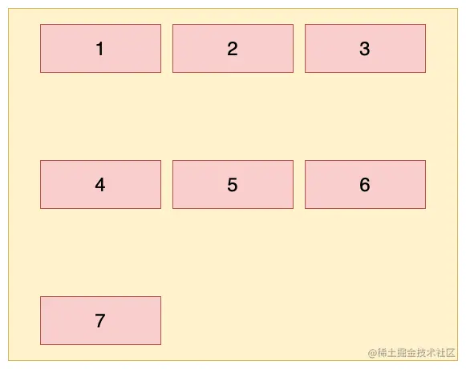
（6）align-content: space-around：每根轴线两侧的间隔都相等
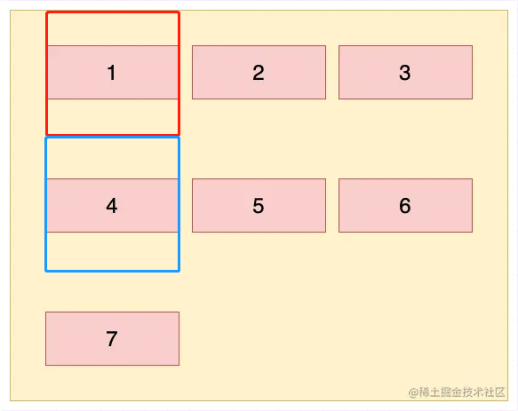
3. 项目属性
- order
- flex-grow
- flex-shrink
- flex-basis
- flex
- align-self
3.1 order
定义项目的排列顺序。数值越小，排列越靠前，默认为0
1 | .item { |
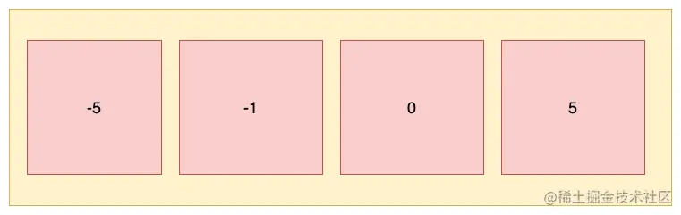
3.2 flex-grow
容器空间有剩余时，定义项目在剩余空间中的放大比例，默认为0，即如果存在剩余空间时也不放大；当多个项目都设置此值，那么它就代表占比权重
（1）如果所有项目的flex-grow属性都设置为1，那么它们会均分剩余的空间，如下图所示：
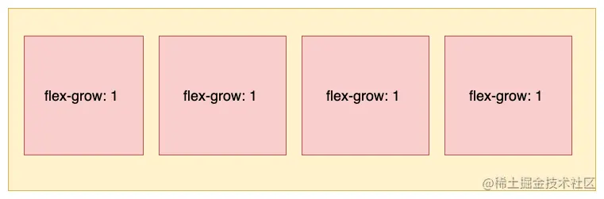
（2）如果其中一个项目的flex-grow属性设置为2，其他均为1，那么它占据的剩余空间就是其他项目的两倍：
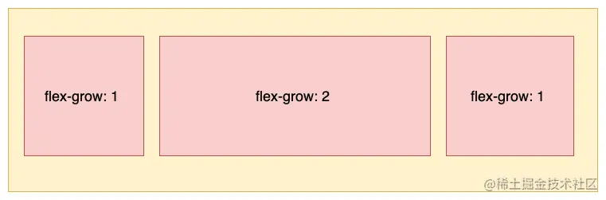
3.3 flex-shrink
容器空间不足时，定义项目在剩余空间中的缩小比例，默认为1，即如果空间不足，该项目将缩小。不能设置负值；当多个项目都设置此值，那么它就代表占比权重
（1）如果所有项目的flex-shrink属性都为1，当空间不足时，都将等比例缩小，如下图所示：
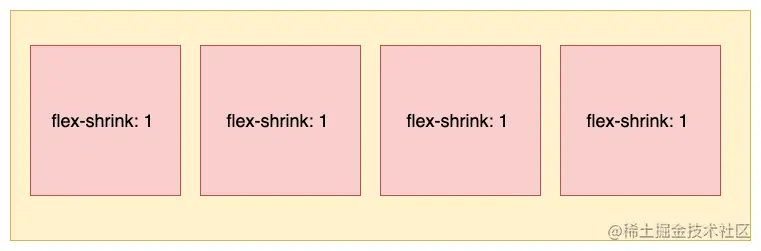
（2）如果一个项目的flex-shrink属性为0，其他项目都为1，则空间不足时，前者不缩小，如下图所示：
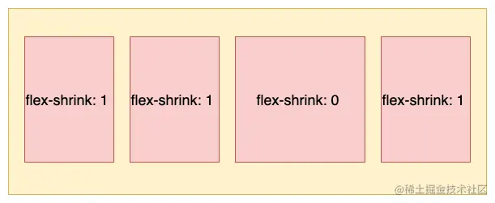
3.4 flex-basis
定义了在分配多余空间之前，项目占据的主轴空间，浏览器会根据这个属性来计算主轴是否有多余空间
1 | .item { |
（1）为auto时，根据项目的指定尺寸来设置大小 （2）指定为Length，这个值既可以是具体的长度或者像素，也可以是百分比
3.5 flex
flex属性是flex-grow, flex-shrink和flex-basis的简写，后两个属性可选。容易写错，尽量不用
1 | .item{ |
3.6 align-self
align-self属性允许单个项目有与其他项目不一样的对齐方式，可覆盖父元素的align-items属性。默认值为auto，表示继承父元素的align-items属性，如果没有父元素，则等同于stretch
1 | .item { |
规则同父容器属性align-items，只是一个覆盖选项，下面是容器align-items属性为flex-start，容器中第三个项目的align-self属性为flex-end的效果：
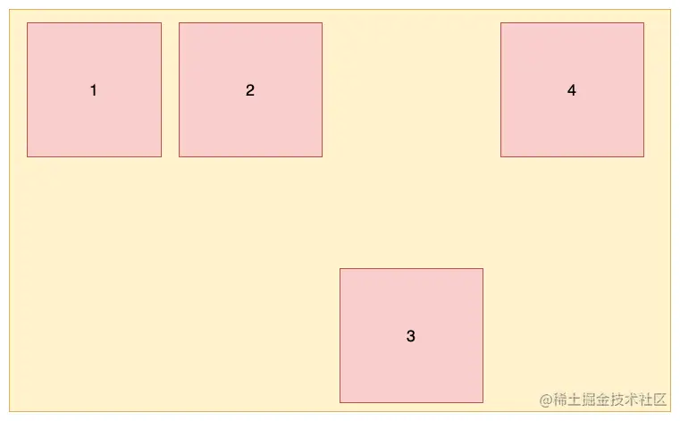
二、Yoga
Yoga引擎的flexbox布局规则绝大部分与CSS规则相同，不再赘述，下面是Yoga官方提供的一个布局预览系统：
https://yogalayout.com/playground